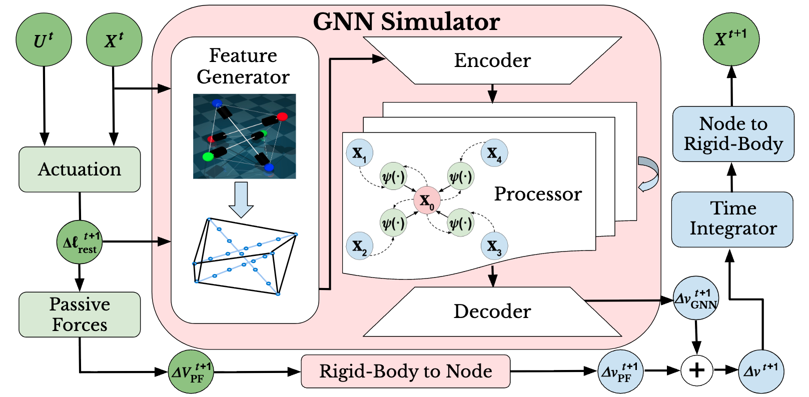

1Rutgers University • 2Amazon Robotics • 3Yale University
Tensegrity robots are composed of rigid struts and flexible cables. They constitute an emerging class of hybrid rigid-soft robotic systems and are promising for a wide array of applications, ranging from locomotion to assembly. They are difficult to control and model accurately, however, due to their compliance and high number of degrees of freedom. To address this issue, prior work has introduced a differentiable physics engine designed for tensegrity robots based on first principles. In contrast, this work proposes the use of graph neural networks to model contact dynamics over a graph representation of tensegrity robots, which leverages their natural graph-like cable connectivity between end caps of rigid rods. This learned simulator can accurately model 3-bar and 6-bar tensegrity robot dynamics in simulation-to-simulation experiments where MuJoCo is used as the ground truth. It can also achieve higher accuracy than the previous differentiable engine for a real 3-bar tensegrity robot, for which the robot state is only partially observable. When compared against direct applications of recent mesh-based graph neural network simulators, the proposed approach is computationally more efficient, both for training and inference, while achieving higher accuracy.

Our pipeline treats each tensegrity robot as a graph: end caps of rigid rods become nodes, while cables and rod segments form edges. At each time step, node and edge features encoding position, velocity, and geometric attributes are fed through a learned encoder. An interaction network then performs message passing to propagate forces and constraints across the structure, after which a decoder predicts per-node accelerations. Euler integration advances the state forward in time. The entire system is differentiable, enabling gradient-based training directly against trajectory rollouts from MuJoCo or real-robot data.
A key design choice is the use of tensegrity-specific graph topology rather than generic mesh graphs. This structural inductive bias dramatically reduces the number of edges compared to mesh-based approaches, cutting both training time and inference cost while retaining all mechanically relevant interactions.
We evaluate our method across three settings: simulation-to-simulation transfer on 3-bar and 6-bar tensegrity robots using MuJoCo as ground truth, and sim-to-real transfer on a physical 3-bar platform where only partial state observations are available.
Tensegrity-specific graph topology yields fewer edges than mesh-based GNNs, resulting in faster training and inference without sacrificing accuracy.
The same architecture accurately models both 3-bar and 6-bar tensegrity configurations in simulation-to-simulation experiments.
Cable connectivity between rod end caps provides a physically meaningful inductive bias, enabling the GNN to reason about contact and compliance effectively.
@inproceedings{chen2024tensegrity, author = {Chen, Nelson and Wang, Kun and Johnson, William R. and Kramer-Bottiglio, Rebecca and Bekris, Kostas and Aanjaneya, Mridul}, title = {Learning Differentiable Tensegrity Dynamics using Graph Neural Networks}, booktitle = {Conference on Robot Learning (CoRL)}, year = {2024}, url = {https://arxiv.org/abs/2410.12216} }